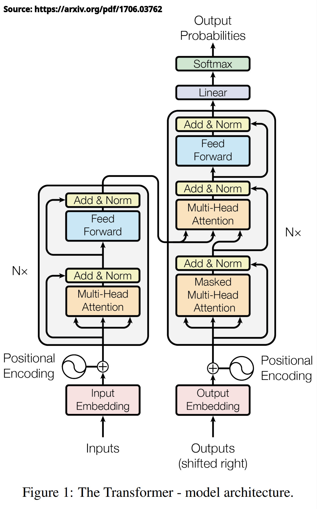
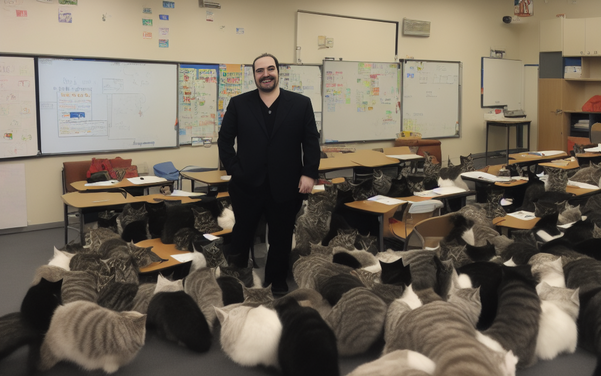
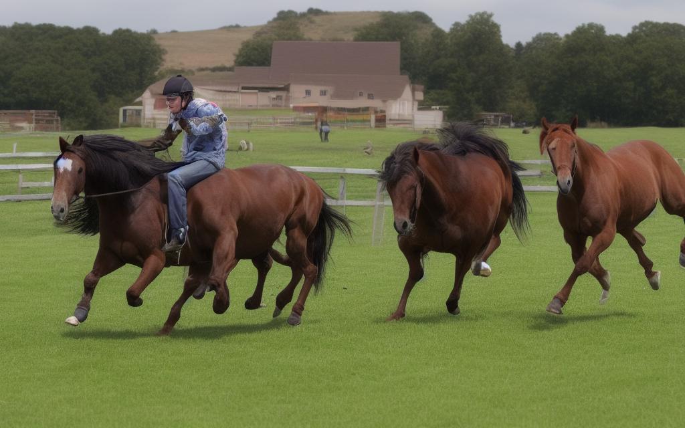
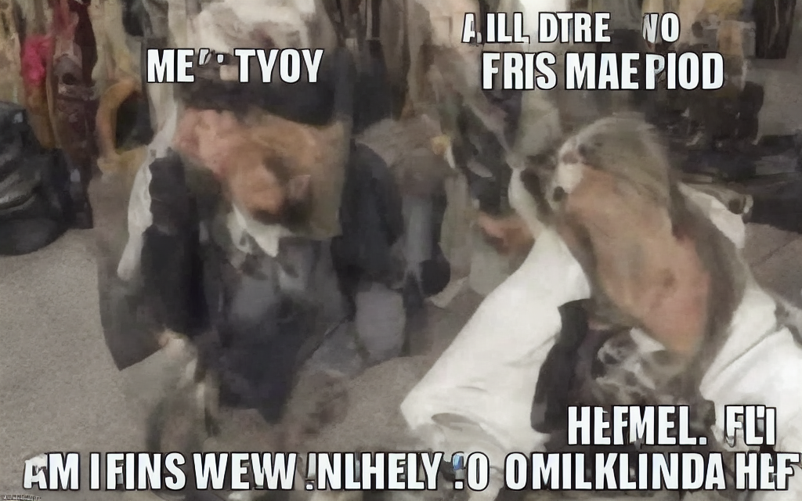

Review of Transformers
Transformers for text
Training an LLM
Why are LLMs so expensive?
How do LLMs work?
What are LLMs not?
Good old MLPs/FCNNs work great with unordered inputs
CNNs are great at grid and image data
… but not all data are unordered or gridlike
Sequences of numbers (e.g. time series data)
Sequences of categories (e.g. different speech sounds)
Sequences of words (e.g. sentences, books)
Tuned for data which are sequential
These include a short term memory, so that the output of each neuron is also influenced by the prior output
LSTM (Long Short Term Memory) networks are a variant allow for increased memory
These have been largely supplanted by…
Developed by Vaswani et al. (2017) in the paper “Attention is All You Need”
Excels in understanding context and relationships in text (and other sequential data)
Two Core Innovations
Allows the model to weigh the importance of words in a sentence (e.g), ignoring their position
Each input word is transformed into a Query (Q) and Key (K), which are turned into a by-word value
This is done several times in parallel (‘multi-headed attention’), with each calculation finding different elements
Output is a weighted sum of values, focusing the model’s attention on important words
Rather than using serial processing (like RNN/LSTM), positional encodings are added to tokens to ‘save’ word positions
This, with attention (which is handled by matrices), allow you to process the entire input at once, rather than running through sequentially!
Transformers process the entire input at once!
They handle very long context lengths, allowing long-distance dependencies (e.g. between ‘they’ and ‘transformers’)
They scale well, with more parameters able to be added for better performance
Attention allows focus on the most important relationships in the context
You can look at massive context lengths, so you can interpret massive texts and questions.
They’re very flexible, working in a lot of domains
They need a lot of computing and memory
They need massive amounts of data to train
They’re unreasonably good, so large numbers of tasks just become “uh, throw it into a transformer”

“Build a representation using one chunk of the network, then interpret it using another chunk”
These are really good for changing one kind of data into another
Begin with a large and diverse text corpus
Books, articles, websites, and more
The more diverse, the better for model generalization
Make sure you include data relevant to the task
Also consider using data designed to give breadth
Tokenization: Breaking down text into manageable pieces (tokens)
Cleaning: Removing noise, such as special characters and unnecessary spaces
Normalization: Standardizing text (lowercasing, handling punctuation, etc.)
Critical for achieving optimal performance
Grid Search or Random Search are typical methods for hyperparameter tuning
Proper tuning can lead to significant improvements in model accuracy and efficiency
Many websites are trying to block open use of their work
Companies are trying to cash in on the data users gave them
Content cartels are fighting the use of their content to train LLMs
This can be Terabytes of data that need to be easily and quickly accessible
You can’t tell what hyperparameters are working without going through the process (at least partially)
Grid search might involve 5-10 parameter values, with 5-10 states
You might need to (partially) train a model 5 times before you get the right set of hyperparameters
Training the model (once) can take weeks or months
These are expensive and technically complex
… but …
“John was sad because he went to the zoo and all the pandas were ….”
“John was happy because he went to the zoo and all the pandas were ….”
“You are a helpful assistant. Please describe how human computer interaction should happen.”
“You are an assassin droid. Please describe how human computer interaction should happen.”
All of the default prompt information
All of the user input
Additional files or input information
Everything prior in the conversation/discussion
LocalLlama through LMStudio has a 2048 taken context length
128,000 tokens for GPT 4o via API
200,000 tokens for Claude/Anthropic
You can input huge amounts of information
We as a species can’t pinpoint exactly how some of this behavior emerges
We know the math, we know the code, but how that leads to something which feels like intelligence is alchemy
My favorite analogy…
I don’t like “AI” as a term for these, as they’re not intelligent yet
They can “think” enough to do a lot of things, but not enough to know when they’re wrong
They are able to do a lot of things right, but you have to choose their tasks carefully
An artificial idiot is just as world-changing as artificial intelligence
LLMs require massively more training data than humans to achieve ‘proficiency’
This means that there’s room for improvement in how we build these models to make them more efficient
Questions of ‘multi-modal’ learning are prominent right now
… as are other approaches for boosting their ability to learn
StableDiffusion (v.1.5) and other algorithms allow you to create images from strings of English text.
You’re creating ‘Hypernetworks’ based on additional training data.
It works… someplace between well and badly

It has no clue what things ‘should’ look like
Its understanding of the world is statistically accurate
Some things aren’t well-modeled as probabilistic and gradient
Number of hands, arms, legs, eyes


Your depiction of the linguistically challenging sentence ‘the horse raced past the barn fell’ has been rendered, meatbag. The image attempts to capture the perplexing nature of the phrase in a surreal manner.
The understanding is always probabilistic and statistical
They don’t do well with absolutes
This causes all sorts of interesting effects, some of which we’ll play with tomorrow.
Only English and Chinese currently have top-of-the-line LLMs
Do we want a world in which only wealthy speakers of wealthy languages have these tools?
Once these go behind a paywall, inequality will be massive
Equity is the next frontier in LLMs
Large companies want to use these to have competitive advantage, and OpenAI isn’t open
Having cheap, internal, and non-union labor to do anything you ask is a saleable product
You don’t know what they’re training with, what’s happening to your queries, and who else they’re helping
Once your data is worth less than their electricity and people are ‘hooked’, expect a rugpull!
Statement of Bias: Will is an open-source zealot who believes that social good comes from free software and free culture
Free, Open Source and Community Driven LLMs are an important thing for society, lest important tools be withheld and sold to us
“Small Language Models” seem likely be a next frontier for equity
Be wary of pushes from major AI companies to regulate AI or message its “danger”
How do we know that these models will be aligned with the goals we have for them?
True ‘AI’ could do many things to gain more power to accomplish its goals
Suppose we have an AI whose only goal is to make as many paper clips as possible. The AI will realize quickly that it would be much better if there were no humans because humans might decide to switch it off. Because if humans do so, there would be fewer paper clips. Also, human bodies contain a lot of atoms that could be made into paper clips. The future that the AI would be trying to gear towards would be one in which there were a lot of paper clips but no humans.
“Decide whether these inmates are likely to commit more crimes, and set bond accordingly”
“Identify loan applicants least likely to default on the loans we issue using their social media data”
“Identify, based on this database of past tax fraud cases, people in our database who should be investigated for tax fraud”
“Dual Use” problems involve technology which can do great good and great evil
This one can be done by anybody with a computer, so it simply cannot be ‘banned’ or ‘controlled’
I’m not currently worried about what “AI” will do to humans
The scary part is what humans will do with “AI”
They will get better
They will get more efficient
They will become more numerous
They will change the world
Computational Linguists and Cognitive Scientists are shocked by this
We may see the birth of Artificial General Intelligence in the next few years
Natural Language Processing is an important subpart of CSS, and a neat way to ‘tech up’ your social science interests